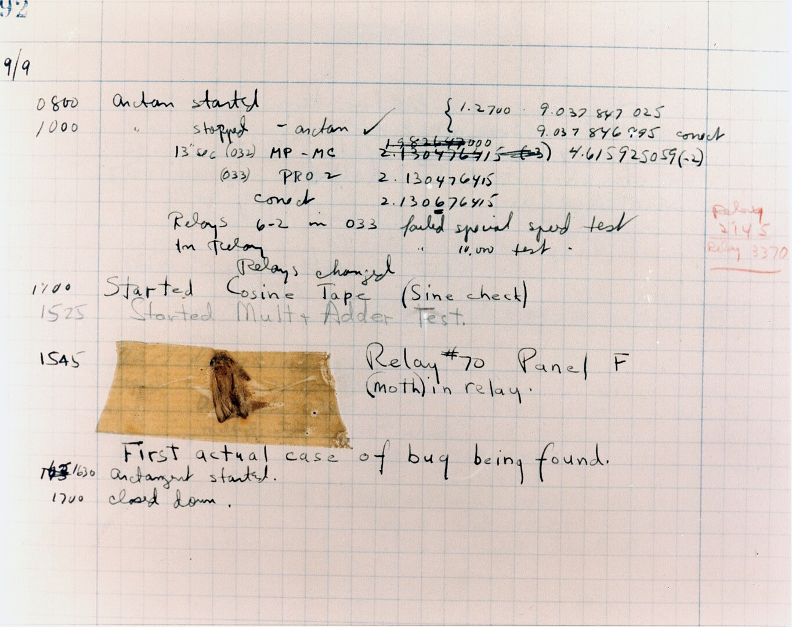
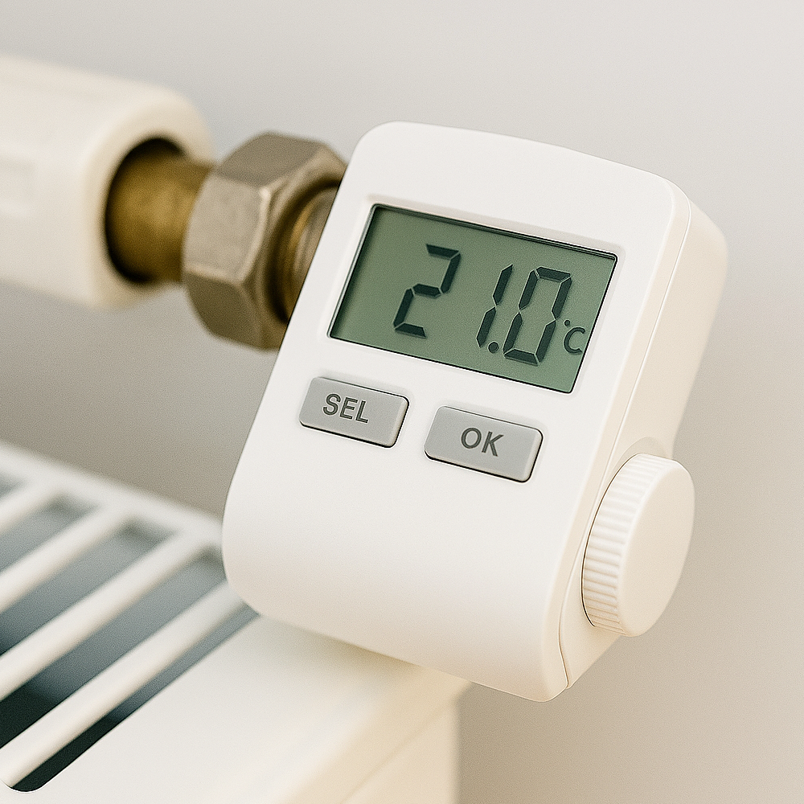
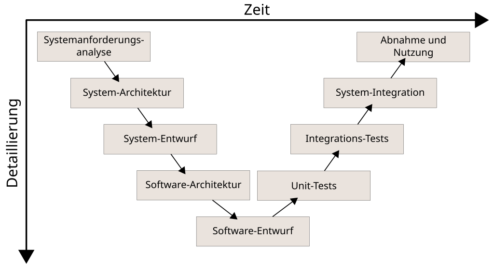

Debugging von Embedded Software in der Praxis
Dr. Luca Parolini
Von Bugs zu Debugging
Die historische Wurzel des Begriffs „Bug“ im Zusammenhang mit technischen Fehlern reicht bis ins 19. Jahrhundert zurück.
- 1878: Thomas Edison beschreibt „kleine Fehler“ in seinen Erfindungen als Bugs.1
- 1947: Mark II Aiken Relay Calculator – berühmter „Bug“ (Motte im Relais).2

Motte zwischen den Kontakten am Relais Nr. 70, Panel F, des Mark II Aiken Relay Calculator gefunden, während er an der Harvard University getestet wurde, am 9. September 1947. Das Relais wurde entfernt und die Motte in das Logbuch eingeklebt.
Der Begriff „Bug“ etabliert sich im Bereich der Computerscience.
Von Bugs zu Debugging
Die historische Wurzel des Begriffs „Bug“ im Zusammenhang mit technischen Fehlern reicht bis ins 19. Jahrhundert zurück.
- 1878: Thomas Edison beschreibt „kleine Fehler“ in seinen Erfindungen als Bugs.1
- 1947: Mark II Aiken Relay Calculator – berühmter „Bug“ (Motte im Relais).2
Debugging ist nicht gleich Troubleshooting
„Debugging bedeutet in der Regel herauszufinden, warum ein Entwurf nicht wie geplant funktioniert. Troubleshooting hingegen bedeutet herauszufinden, was an einer bestimmten Kopie eines Produkts defekt ist, wenn das Produktdesign an sich als korrekt gilt.“ — Agans (2023)3
“Debugging usually means figuring out why a design doesn’t work as planned. Troubleshooting, on the other hand, means figuring out what is wrong with a particular copy of a product when the product design itself is considered correct.”
Debugging und Kommunikationsfehler in Embedded Software
Anzahl der beteiligten Gruppen erschwert die Defektanalyse

- Geschätzte Gruppen: <3
- Komplexität: Niedrig
- Geschätzte Gruppen: 5-10
- Komplexität: Mittel
- Geschätzte Gruppen: >20
- Komplexität: Hoch
Risiko von Kommunikationsfehler wächst mit der Zahl der beteiligten Gruppen.
Alle Figuren sind mit Microsoft Copilot generiert.
Die Soll-Funktion ergibt sich aus den Anforderungen
Die Testfällen beschrieben aber sie explicit

- Jede Ebene ableitet detailliertere Anforderungen für die nächste Ebene sowie passende Testfälle.
- Anforderungen beschrieben das Soll-Verhalten für mehrere Input Bedingungen.
- Während eine Testphase, ist die Soll-Verhalten nur anhand von einem Test case für das System Unter Test (SUT) spezifiziert.
- Test cases spezifizieren das Soll-Verhalten für ein spezifische, sehr detaillierten Fall
Fehler können sowohl in der Spezifikation der Anforderungen als auch in der Ableitung der Testfälle entstehen.
Bild von Michael Pätzold, S. Seyfert, CC BY-SA 3.0.
Anforderungs‑Testfall‑Diskrepanz
Kamera‑Degradation in autonomen Fahrzeugen
Produktziel :Das Fahrzeug muss bei guten Wetterbedingungen sicher fahren können.
- ↳ Anforderung S.1: Das System muss aktivierbar sein, wenn geeignete Wetterbedingungen erfüllt sind.
- ↳ Anforderung S.2: Das System muss sich sicher deaktivieren, wenn geeignete Wetterbedingungen nicht erfüllt sind.
…
Anforderung S.102: Das System muss sich sicher deaktivieren, wenn die Kamera ungeeignete Wetterbedingungen erkennt.
- ↳ Kamera-Anforderung K.1: Die Kamera muss ungeeignete Wetterbedingungen erkennen können.
- Beispiele: Blendung durch Sonnenlicht, Regentropfen auf den Linsenelementen
- ↳ Kamera-Anforderung K.1: Die Kamera muss ungeeignete Wetterbedingungen erkennen können.
Alle Anforderungen und Testfälle sind fiktiv und dienen nur zu Illustrationszwecken.
Anforderungs‑Testfall‑Diskrepanz
Kamera‑Degradation in autonomen Fahrzeugen
Produktziel :Das Fahrzeug muss bei guten Wetterbedingungen sicher fahren können.
↳ Anforderung S.1: Das System muss aktivierbar sein, wenn geeignete Wetterbedingungen erfüllt sind.
↳ Anforderung S.2: Das System muss sich sicher deaktivieren, wenn geeignete Wetterbedingungen nicht erfüllt sind.
…
Anforderung S.102: Das System muss sich sicher deaktivieren, wenn die Kamera ungeeignete Wetterbedingungen erkennt.
- ↳ Kamera-Anforderung K.1: Die Kamera muss ungeeignete Wetterbedingungen erkennen können.
- Beispiele: Blendung durch Sonnenlicht, Regentropfen auf den Linsenelementen
- ↳ Kamera-Anforderung K.1: Die Kamera muss ungeeignete Wetterbedingungen erkennen können.
In Laufe eine spätere Testphase, wird ein Defekt entdeckt:
| Test ID | Vorbedingungen | Soll-Verhalten | Ist-Verhalten | SW-Version | HW-Version |
|---|---|---|---|---|---|
| S.1 - 01 | Ideales Wetter: Tag, Sonne, kaum Wolken | Autonomes Fahren ist aktivierbar und läuft ohne Unterbrechungen | Fahrzeug fährt korrekt bei freier Fahrt, bleibt jedoch stehen, sobald eine Stausituation entsteht. → Autonomes Fahren nicht mehr aktivierbar! | 1.1 | C |
Alle Anforderungen und Testfälle sind fiktiv und dienen nur zu Illustrationszwecken.
Anforderungs‑Testfall‑Diskrepanz
Kamera‑Degradation in autonomen Fahrzeugen
| Test ID | Vorbedingungen | Soll-Verhalten | Ist-Verhalten | SW-Version | HW-Version |
|---|---|---|---|---|---|
| S.1 - 01 | Ideales Wetter: Tag, Sonne, kaum Wolken | Autonomes Fahren ist aktivierbar und läuft ohne Unterbrechungen | Fahrzeug fährt korrekt bei freier Fahrt, bleibt jedoch stehen, sobald eine Stausituation entsteht. → Autonomes Fahren nicht mehr aktivierbar! | 1.1 | C |


Für die Kamera sind die Wetterbedingungen nicht geeignet, auch wenn von der Fahrerperspektive, Wetterbedienung ideal sind.
- Konzept Fehler: Die Anforderung S.2 und K.1-01 beziehen sich auf unterschiedliche Definitionen von “geeigneten Wetterbedingungen”.
Kommunikationsfehler zwischen Produkt und Kamera Teams.
Erster Schritt bei der Analyse eines Defekts ist die Überprüfung, ob tatsächlich ein Defekt vorliegt.
Add me
Jede System muss sein Input monitorieren und off-line analysieren können
Logging und Tracing sind kritisch
Werkzeuge und Techniken um das System Verhalten zu beobachten
Beispiel: Monitoring von Kaffee Temperatur in einer Kaffeemaschine
Wie können wir das Verhalten beobachten ohne das System zu beeinflussen?
- Nie printf befehle in Embedded Systems benutzen!!
- Log Dateien mit Zeitstempel und Kontextinformationen
- Trace Analyse Werkzeuge
- Autmotive ist DLT (Diagnostic Log and Trace) Standard
Hardware Debugging Werkzeuge
- JTAG, SWD, etc..
- Logic Analyzer
- In-Circuit Emulatoren
Software Debugging Werkzeuge
- GDB, LLDB, etc..
- IDE integrierte Debugger
- Spezielle Debugging Werkzeuge für Embedded Systems
Debugging Techniken
- Breakpoints und Watchpoints
- Step-by-Step Ausführung
- Speicher- und Register-Inspektion
- Code Coverage Analyse
- Performance Profiling
- Timing Analyse
- Kommunikationsprotokoll Analyse
Zusammenarbeit im Team
Gemeinsame Debugging Sitzungen
Nie ein Fehler simulieren, Die Fehler müssen stimuliert werden!!
Problem: Nicht alle Fehler sind reproduzierbar da nicht alle Input Bedingungen kontrollierbar sind und Status Informationen fehlen können
Beispiel: Intermittierende Fehler durch elektromagnetische Störungen
Debugging ist ein iterativer Prozess
Hypothese generieren, testen, verfeinern
Geduld und Ausdauer sind entscheidend